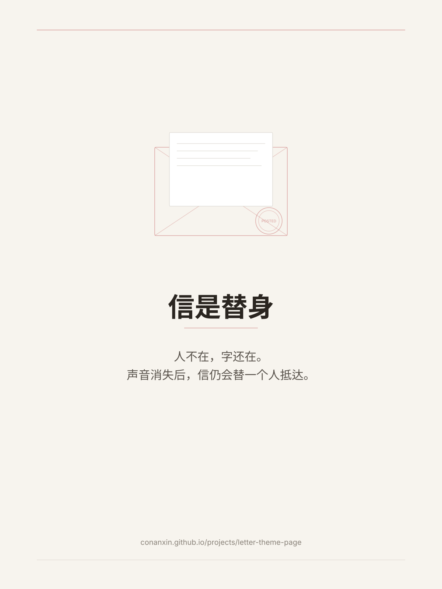
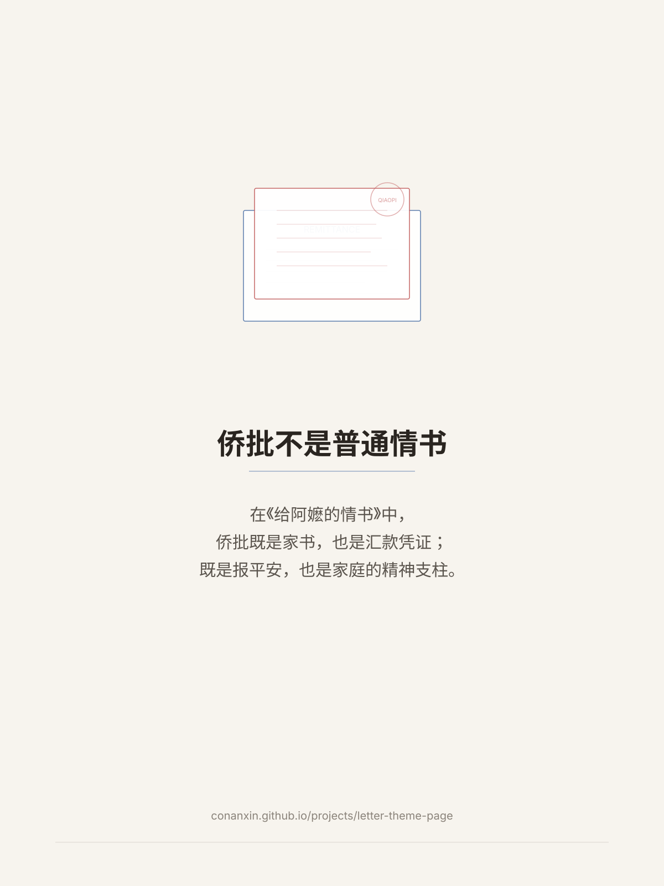
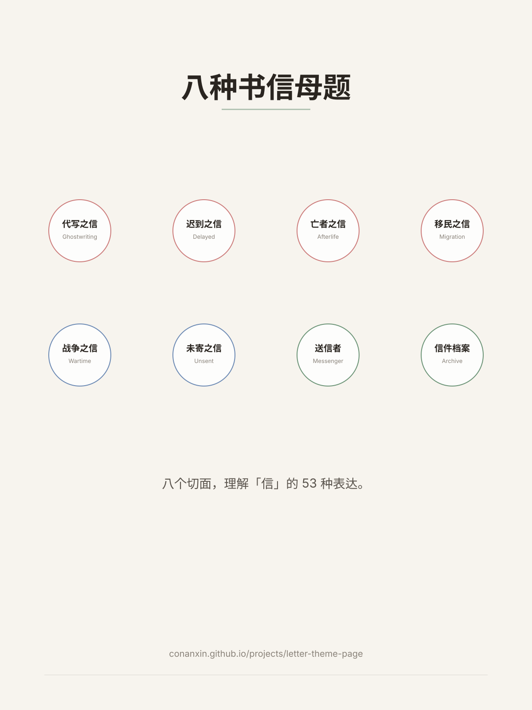
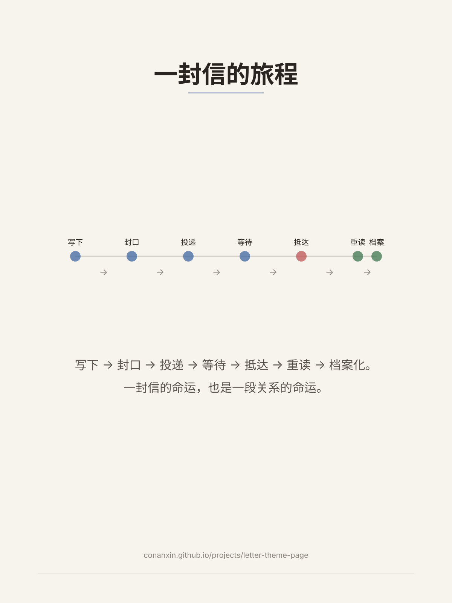
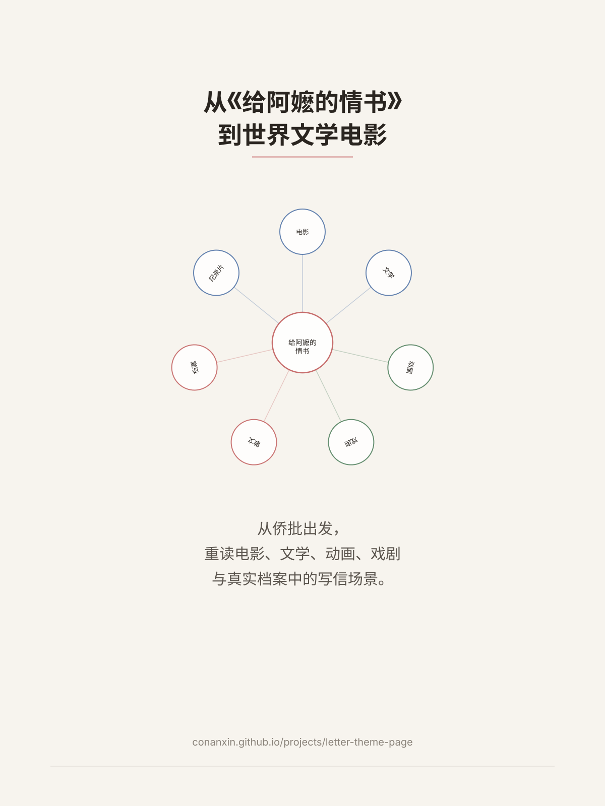

card-01-letter-as-presence.svg
https://conanxin.github.io/projects/letter-theme-page/assets/social/card-01-letter-as-presence.svg
card-02-qiaopi-not-love-letter.svg
https://conanxin.github.io/projects/letter-theme-page/assets/social/card-02-qiaopi-not-love-letter.svg
card-03-eight-motifs.svg
https://conanxin.github.io/projects/letter-theme-page/assets/social/card-03-eight-motifs.svg
card-04-letter-journey.svg
https://conanxin.github.io/projects/letter-theme-page/assets/social/card-04-letter-journey.svg
card-05-from-dear-you-to-world.svg
https://conanxin.github.io/projects/letter-theme-page/assets/social/card-05-from-dear-you-to-world.svg所有图卡均为原创 SVG，无外部图片引用。